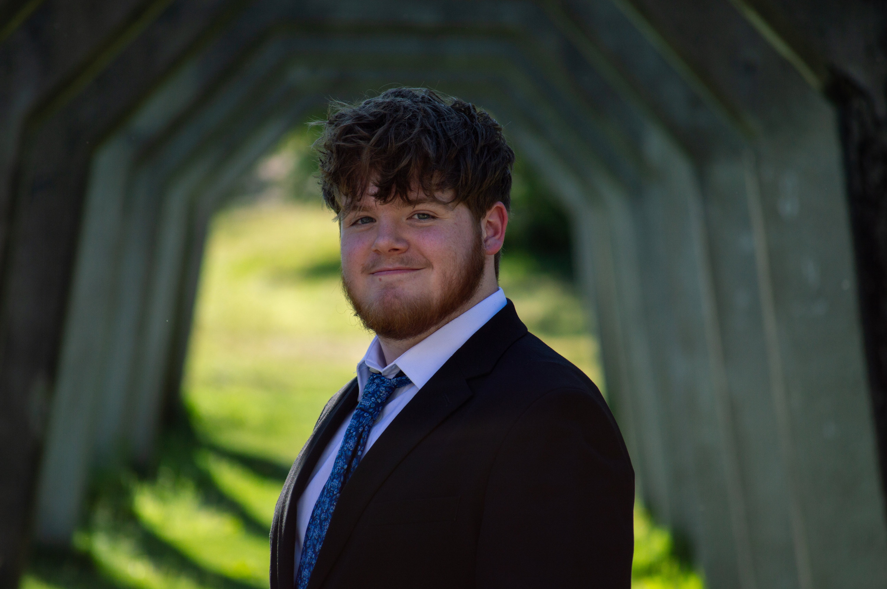

About

Owen Maurer is a photographer and engineering student from Seattle, Washington, USA. He attends the University of Washington, and has been a photographer since 2019.
Raised in the Pacific Northwest, Owen developed an intrinsic appreciation for nature through camping, hiking, and field trips. In high school, Owen founded and presided over his school's photography club, and he is currently a member of Dubshot at the University of Washington. He has experience in a wide range of styles, but specializes in landscape and street photography. Outside of photography, Owen enjoys sports, music, reading, and watching movies.